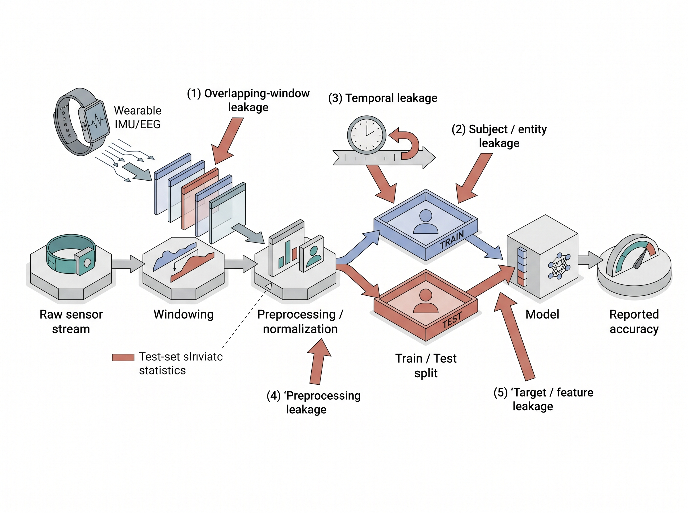

"The model did not learn the task. It learned who was holding the sensor, and I paid it a 99% accuracy for the trouble."
A Chastened AI Agent
The Big Picture
Data leakage is, in practice, among the most common and most expensive errors in applied sensory AI; reproducibility audits keep tracing inflated results back to it (see the Research Frontier below). It happens whenever information that will not be available at prediction time, or that belongs to the test set, sneaks into training and inflates your reported accuracy. On sensor data the leak is especially insidious because streams are continuous, highly autocorrelated (each sample closely resembles the ones just before and after it, so neighboring windows are near-duplicates), and tagged by identity: the same subject, device, or session appears in thousands of near-identical windows. A careless split scatters those windows across train and test, and the model quietly learns to recognize the source rather than the phenomenon. The result is a benchmark number that looks publishable and a deployed system that fails on the first new user or new machine. This section names the ways leakage enters a sensor dataset, shows why the inflated number is fiction, and gives you the diagnostic reflexes to catch it. The cures (entity-aware splits, per-device normalization) get their own sections; here we learn to see the disease.
This section builds directly on Section 5.2, where we cut streams into overlapping windows, and it assumes you understand autocorrelation and the sampling model from Chapter 3. It also foreshadows Chapter 65, which turns these ideas into full evaluation protocols. We stay out of the mechanics of building splits (that is Section 5.4) and of normalization (Section 5.5); our job is to define leakage precisely and make it visible.
What leakage is, formally
What. Train a model on \(\mathcal{D}_{\text{train}}\) and evaluate it on \(\mathcal{D}_{\text{test}}\). Leakage is any dependency that biases the test estimate of generalization error toward optimism. The measured performance then overstates what the model will achieve on genuinely unseen data from the deployment distribution. Why it matters. A held-out test set exists to stand in for the future. If the test set shares information with training that the future will not share, the stand-in lies, and every decision that rests on it (model selection, go/no-go, a regulatory claim) rests on fiction. How it shows up. An honest evaluation requires that the train and test examples be independent given the label, so that
$$ \mathbb{E}\big[\,\hat{L}(\mathcal{D}_{\text{test}})\,\big] = L_{\text{deploy}}. $$Leakage breaks the independence. The split shares some latent variable \(z\) (a subject's physiology, a device's calibration offset, a moment in time), so the model exploits \(z\) to answer test queries it should not be able to answer. On tabular data you can often arrange this independence easily. On sensor data, violating it is the default, which is why leakage is endemic here.
Concretely, a held-out test set is a partition of the labeled data that is quarantined before any training, tuning, or feature choice touches it, and is scored exactly once to produce an estimate of deployment error. It matters because it is the only unbiased instrument you have for the future: the instant it influences a modeling decision it stops measuring generalization and starts measuring memorization. Mechanically it works by simulating the train-then-deploy gap, standing in for data the model has never encountered; reach for it when you need an honest point estimate, and prefer nested cross-validation instead when data is too scarce to spend a whole partition on a single measurement. In short: a sensor test set tells the truth only when no identity it has already seen is allowed to answer for the future.
Key Insight
Sensor leakage is almost always identity leakage in disguise. A raw waveform carries a fingerprint of everything that produced it: the wearer's gait idiosyncrasies, the accelerometer's fixed bias, the room's electrical hum, the exact minute a machine was recorded. These nuisance variables (incidental factors that vary with the source but carry no information about the target concept) are far easier to memorize than the target concept, and they correlate with the label inside a recording. So whenever the same identity straddles the train/test boundary, gradient descent takes the shortcut: it learns the fingerprint. The tell is a spectacular in-distribution score that collapses the moment a new subject, device, or site arrives. If your accuracy is suspiciously high, suspect that the model found an identity it was allowed to see on both sides.
Mental Model
Picture grading a stack of student essays where every student happens to write on their own distinctively colored paper. If the same students' essays sit in both the pile you practice on and the pile you are finally graded against, you can "predict" essay quality with uncanny accuracy by simply memorizing that the blue-paper student writes well and the green-paper student poorly, without reading a single sentence. The paper color is the identity fingerprint, memorizing color-to-grade is the shortcut gradient descent takes, and actually reading the prose is the real skill you never bothered to learn. Hand you an essay from a brand-new student on plain white paper and the trick evaporates, exactly as a sensor model that learned wearers rather than motion collapses on the first new subject or device.
A field guide to the leaks
Leakage in sensor pipelines is not one bug but a family. Learn to recognize each by where it enters. Figure 5.3.2 illustrates the five doors of leakage in a sensor ML pipeline.

- Overlapping-window leakage. Adjacent windows from a sliding stride share raw samples (Section 5.2). Split the windows at random and near-duplicate neighbors land on opposite sides; the test window is a lightly shifted copy of a training window. This alone can add tens of points of phantom accuracy.
- Subject / entity leakage. The same person, patient, vehicle, or machine appears in both train and test. The model recognizes the entity's signature and rides its label correlation. This is the dominant leak in human activity recognition, biosignals, and predictive maintenance.
- Temporal leakage. Training on data recorded after the test period, or shuffling a non-stationary stream (one whose statistical properties, such as mean or variance, drift over time) so the future informs the past. Any deployed system only ever sees the past, so a random shuffle over time is a lie about causality.
- Preprocessing leakage. Computing normalization statistics, principal component analysis (PCA) bases, resampling filters, or feature scalers on the full dataset before splitting, so test-set statistics flow into the training transform. Subtle, common, and fully preventable by fitting transforms on train only (Section 5.5).
- Target / feature leakage. A feature encodes the label by construction: a maintenance log field that is only populated after a failure, a filename that contains the class, a sensor that was added specifically because a fault was already known. The model reads the answer off the input.
Checkpoint
So far: leakage is any dependency that makes the test set easier than deployment, and on sensor data it arrives through five doors: overlapping windows, shared subjects or entities, broken time order, whole-dataset preprocessing, and features that encode the label.
Common Misconception
The "no shared rows" fallacy: readers assume that as long as no byte-identical window appears in both train and test, the split is leak-free. Deduplicating rows does almost nothing for the leaks that matter, because leakage travels through a shared latent identity (the same subject, device, or session), not through identical samples: two entirely different windows recorded from the same wearer still hand the model its fingerprint. Guard the entity boundary, not row uniqueness.
Practical Example: the human activity recognizer that could not meet a stranger
A wearables team trained a 6-axis inertial measurement unit (IMU) activity classifier on 30 volunteers and reported 96% accuracy on a random 80/20 window split. Shipped to a pilot cohort, field accuracy fell to the low 70s. The autopsy found two stacked leaks. First, windows were cut with 90% overlap and split at random, so most test windows had an almost-identical twin in training. Second, and worse, every one of the 30 subjects appeared in both partitions, so the network had learned each volunteer's personal gait fingerprint and used it as a shortcut to their most-frequent activity. When a genuinely new wearer arrived, both crutches vanished at once. Re-evaluated with a subject-disjoint split (Section 5.4), the same architecture scored 74%, matching the field. The model had never been that good; the 96% was the measurement, not the model.
Real-World Application: subject-wise splits in sleep staging (PhysioNet Sleep-EDF)
Automated sleep stagers trained on PhysioNet's Sleep-EDF electroencephalography (EEG) recordings once reported inflated agreement because 30-second epochs from the same patient landed in both train and test, so the network memorized each sleeper's EEG signature. Modern benchmarks and libraries such as the DeepSleepNet and YASA pipelines now mandate subject-wise (patient-disjoint) cross-validation, which drops headline accuracy by several points but is the only number that predicts performance on a new patient in the clinic.
Seeing the leak: the accuracy gap
A published 0.98 that collapses to 0.71 in the clinic is not a rounding error; it is a recalled device, a retracted paper, or a safety review, each one tracing back to a number nobody stress-tested. Before you trust any headline score you need a way to measure how much of it is real. Naming a leak tells you where to look; the accuracy gap tells you how much it is costing you. How to detect it. The most reliable diagnostic is a controlled comparison: evaluate the identical model and features under a naive random split and under an entity-disjoint split (one where no subject, device, or session appears on both sides, built as shown in Section 5.4), and read the gap. A large drop is the leakage magnitude. The code below builds a tiny synthetic dataset where each subject has a strong personal offset that is predictive within a subject but useless across subjects, then measures both numbers. Figure 5.3.1 contrasts the two splitting strategies: the random split scatters each subject's windows across both partitions, while the subject-disjoint split keeps every subject wholly on one side.
import numpy as np
from sklearn.ensemble import RandomForestClassifier
from sklearn.model_selection import train_test_split, GroupShuffleSplit
rng = np.random.default_rng(0)
n_subj, per_subj = 20, 200
# Each subject gets a private fingerprint offset; the TRUE label depends
# only on a within-window feature, not on the offset.
subj = np.repeat(np.arange(n_subj), per_subj)
fingerprint = rng.normal(0, 3, n_subj)[subj] # identity nuisance
signal = rng.normal(0, 1, len(subj)) # the real, learnable cue
y = (signal > 0).astype(int)
X = np.c_[signal + fingerprint, fingerprint + rng.normal(0, .1, len(subj))]
# (1) Naive random split: subjects appear on both sides -> leakage
Xtr, Xte, ytr, yte = train_test_split(X, y, test_size=.3, random_state=0)
leaky = RandomForestClassifier(random_state=0).fit(Xtr, ytr).score(Xte, yte)
# (2) Subject-disjoint split: no subject crosses the boundary
gtr, gte = next(GroupShuffleSplit(test_size=.3, random_state=0).split(X, y, subj))
honest = RandomForestClassifier(random_state=0).fit(X[gtr], y[gtr]).score(X[gte], y[gte])
print(f"random split: {leaky:.3f}") # optimistic, leaks identity
print(f"group split: {honest:.3f}") # what deployment actually sees
train_test_split line scatters subjects across both sides so the RandomForestClassifier can lean on each subject's fingerprint offset and prints an inflated score, while the GroupShuffleSplit line keeps every subject on one side so the printed number reflects only the generalizable signal cue. The difference between the two printed accuracies is the leakage, manufactured entirely by the split and not by the model.Run it and the random-split score sits well above the group-split score, because that evaluation let the forest read the identity offset it also saw in training. The group split forces reliance on signal, the only cue that transfers to a new subject, and the gap between the two is what leakage costs you. Three cheap reflexes catch most leaks: shuffle-test a suspiciously strong feature (if performance survives label shuffling, it is leaking), inspect what the model attends to (identity artifacts light up), and ask whether each feature would be knowable at prediction time in production.
Step-Through: how the identity offset manufactures the accuracy gap
Trace the leak with two subjects and eight windows. Each window records a real cue signal and a private fingerprint offset; the true label is y = 1 when signal > 0. The only observed feature is X = signal + offset, so the offset hides the cue.
- Subject A, offset
+4: four windows withsignal = +0.5, -0.5, +0.3, -0.3, givingX = 4.5, 3.5, 4.3, 3.7andy = 1, 0, 1, 0. - Subject B, offset
-4: four windows with the same signals, givingX = -3.5, -4.5, -3.7, -4.3andy = 1, 0, 1, 0.
Group split (B held out, A in training). The model never saw B's offset, so all it can learn from A is a threshold near A's own values, roughly "predict 1 when X > 4" (the midpoint between A's y = 0 windows near 3.6 and its y = 1 windows near 4.4). Applied to B, every one of B's windows falls below 4, so the model predicts 0 for all four: it is right on B's two true-0 windows and wrong on its two true-1 windows. Score on the unseen subject: 2 of 4 = 50%, exactly chance, because the hidden offset of -4 pushes all of B's values below the boundary calibrated on A.
Random split (two windows of each subject in training, the other two in test). Now both offsets appear in training with both labels, so the model can calibrate a per-subject threshold: "predict 1 when X > 4" for A-like values and "predict 1 when X > -4" for B-like values. On the held-out windows every prediction is correct: A's test windows (X = 4.3, 3.7) fall on the right side of 4, and B's (X = -3.7, -4.3) fall on the right side of -4. Score: 4 of 4 = 100%. The 50-point jump came from nothing but letting each subject sit on both sides so its offset could be calibrated away, which is precisely the identity leak the code above measures at scale.
Watch Out: a passing test set is not a leak-free test set
Leakage does not announce itself with an error; it announces itself with a good number, which is exactly why it survives review. Cross-validation does not save you if the folds are drawn at random over correlated windows, because every fold inherits the same identity leak. Nested cross-validation, more data, and a bigger model all leave the bias untouched or make it worse. The only fix is structural: decide what entity must not cross the split (subject, device, site, session, machine), and enforce that boundary before a single number is computed. Treat any headline accuracy without a stated split policy as unverified.
Right Tool: group-aware splitting in one call
Writing a correct entity-disjoint split by hand (grouping windows by subject, ensuring no group straddles the boundary, keeping class balance across sides, and repeating for cross-validation folds) is roughly 30 to 50 lines of careful, easy-to-botch bookkeeping. scikit-learn's GroupShuffleSplit, GroupKFold, and StratifiedGroupKFold reduce it to a single constructor plus a groups= argument, as shown above, and they guarantee the invariant that no group appears on both sides. You still must supply the right grouping key; the library only enforces the boundary you name. Section 5.4 covers choosing that key.
Exercise
Take any public human activity recognition set (for example one with per-subject IDs and 50 Hz IMU). (a) Window it with 50% overlap and train a simple classifier under a random 80/20 window split; record accuracy. (b) Re-split so no subject appears in both train and test, retrain, and record accuracy. (c) Now add a second leak on purpose: fit a global z-score normalizer on the whole dataset before splitting, and measure how much it lifts the random-split number. Report all three gaps in one table and write two sentences explaining which leak each column isolates. Cross-check your normalization reasoning against Section 5.5.
Self-Check
- Your model scores 0.98 under 5-fold cross-validation but 0.71 on a new site. Name the two most likely leaks and the one experiment that would distinguish them.
- Why does computing normalization statistics before the train/test split leak information, even though normalization never touches the labels?
- A colleague shuffles a year-long non-stationary sensor stream and reports strong cross-validation results. What kind of leakage is this, and why is the number meaningless for a deployed forecaster?
The tank that only worked on sunny days
Machine-learning folklore tells of an early neural network trained to spot camouflaged tanks in photographs that scored perfectly in the lab and then failed completely in the field. The reveal, retold for decades in AI courses, is that every tank photo happened to be taken on an overcast day and every empty-forest photo on a sunny one, so the network had learned to classify the sky, not the tank. Whether the tale is literal history or a teaching parable, it is the oldest known description of identity leakage: the model latched onto a nuisance variable perfectly correlated with the label in the dataset and useless the instant the weather changed. Every subject-fingerprint and per-device-offset leak in this section is the same story wearing a lab coat.
Research Frontier
Leakage is now studied as a systemic cause of irreproducible results, not a one-off bug. Kapoor and Narayanan's "Leakage and the Reproducibility Crisis in Machine-Learning-based Science" (Patterns, 2023) catalogs eight distinct leakage types across 294 flawed papers spanning seventeen scientific fields, showing how each one inflates reported performance; their follow-up REFORMS reporting checklist (Kapoor et al., 2024) then proposes a community standard that forces authors to declare their split policy and leakage safeguards before a number is trusted. The frontier beyond this section is automated leakage auditing: tooling and checklists that verify entity-disjoint, time-respecting evaluation as a precondition for publication rather than a post-hoc autopsy.
Try It: measure your own leakage gap in 20 minutes
Reproduce the field's most common error on real data with only a laptop and numpy, pandas, and scikit-learn.
- Download the WISDM accelerometer activity dataset (raw tri-axial samples with a
usercolumn and an activity label) and load it into a DataFrame. - Segment each user's stream into 2-second windows with 50% overlap, and from each window extract a handful of cheap features (per-axis mean, standard deviation, and min/max), keeping the window's
userid and its majority activity label. - Train a
RandomForestClassifierunder a plaintrain_test_split(test_size=0.3)over the windows and record the accuracy. - Retrain the identical model, but split with
GroupShuffleSplit(test_size=0.3)passinggroups=user, so that no user appears on both sides, and record the accuracy again. - Subtract the two numbers. That gap, produced entirely by the split and not by the model, is the phantom accuracy identity leakage would have bought you in a paper.
Leakage is not an exotic failure; it is the default outcome of treating an autocorrelated, identity-tagged sensor stream like a bag of independent rows. The habit that protects you is to name, before any model runs, the entity that must never cross the split and the moment in time that separates past from future, then to enforce both mechanically. Do that and your test set goes back to doing its one job: telling you the truth. The same discipline reappears everywhere models are evaluated in this book, from patient-level biosignal splits to leakage-safe benchmarking in Chapter 65.
Lab: watch the leakage gap open and close on UCI-HAR
Goal. Measure, with your own hands, how much phantom accuracy identity leakage buys and confirm that an entity-disjoint split erases it. Budget 15 to 30 minutes.
Tools. Python with numpy, pandas, and scikit-learn, plus the UCI Human Activity Recognition dataset (30 subjects, smartphone IMU, a subject id column and a pre-computed 561-feature vector per window, so no windowing code is needed).
Steps. (1) Load the feature table and labels and keep the subject id per row. (2) Train a RandomForestClassifier under a plain train_test_split(test_size=0.3, random_state=0) and record accuracy. (3) Retrain the identical model under GroupShuffleSplit(test_size=0.3, random_state=0) with groups=subject and record accuracy again.
What to vary. Sweep the number of subjects allowed to cross the boundary: force 0, then 5, then 15, then all 30 subjects to appear in both partitions, and watch the reported accuracy climb monotonically as the leak widens. Optionally repeat with GroupKFold to see the gap persist across folds.
What to observe. The random split typically lands high (often above 0.97) while the fully subject-disjoint split drops by several points; the size of that drop is the identity leak, and it should shrink to near zero exactly when zero subjects cross the boundary. That single monotone curve is the whole lesson of this section in one plot.
What's Next
Section 5.4 turns the diagnosis into a cure: how to construct device, user, site, session, and machine splits that hold the leakage boundary you identified here. It shows when each grouping key is the right one, how to keep class balance across disjoint groups, and how to layer grouping with time-based splits so both identity and causality are respected at once.